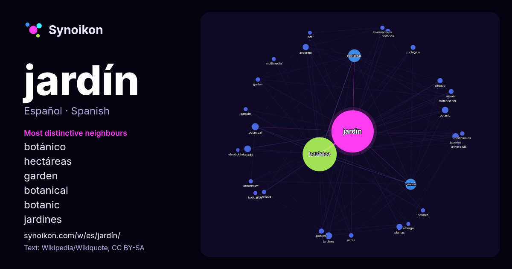

Español · lista de palabras del día
jardín
“garden” · Las palabras encontradas a su alrededor en 1366 apariciones de Wikipedia, Wikiquote.

Vecinos más característicos
- botánico 725×
- hectáreas 107×
- garden 88×
- botanical 38×
- botanic 33×
- jardines 31×
- arboreto 30×
- japonés 26×
- francés 19×
- zoológico 18×
- acres 16×
- garten 16×
- medicinales 15×
- botanique 15×
- invernaderos 14×
- botànic 14×
- arboretum 14×
- situado 13×
- plantas 13×
- multimedia 13×
× = cuántas veces más que en el texto general de Wikipedia.
Vecinos más frecuentes
- botánico 891
- hectáreas 123
- garden 94
- botanical 38
- ciudad 36
- jardines 35
- francés 34
- japonés 33
- botanic 32
- arboreto 29
- plantas 28
- universidad 24
- nacional 21
- real 21
- situado 21
- público 20
- histórico 19
- alemán 18
- conocido 18
- llamado 18
En contexto
- Jardín de rosas o Rosaleda Jardines pequeños Jardines grandes También pueden destacar un estilo particular o estético: Jardín alpino o Rocalla Jardín Wikipedia snippets · Jardín
- Kamakura, Muromachi, Momoyama y el periodo Edo hasta los jardines de la actualidad. La historia del jardín japonés comprende prácticamente dos milenios, aunque Wikipedia snippets · Jardín japonés
- francés. Uno de los más conocidos ejemplos de jardín concebido con la estética del jardín inglés es el Jardín Inglés de Múnich (Alemania). Este estilo fue Wikipedia snippets · Jardín inglés
- El jardín botánico es aquel tipo de jardín que está destinado a la conservación, investigación y divulgación de la diversidad de las especies vegetales Wikipedia snippets · Jardín botánico
- de Neguri se diseñó basándose en las ciudades-jardín inglesas y en Bilbao se edificó la Ciudad Jardín bilbaína entre 1923 y 1925. En Vitoria se encuentra Wikipedia snippets · Ciudad jardín
- El Jardín de plantas de París (apócope de «Real jardín de las plantas medicinales», términos en francés designados como Jardin des plantes para la apócope Wikipedia snippets · Jardín de plantas de París
- naturaleza. En Francia se conoce como jardín regular o jardín clásico y es expresión del clasicismo en el arte de los jardines, es decir, de la búsqueda de la Wikipedia snippets · Jardín francés
- El Jardín Botánico de Misuri (Missouri Botanical Garden, en inglés) es un jardín botánico de 31 hectáreas de extensión, localizado en San Luis. Este jardín Wikipedia snippets · Jardín Botánico de Misuri
Más palabras
- agua
- arte
- bosque
- caballo
- camino
- campana
- canción
- ciencia
- ciudad
- clima
- comida
- corazón
- desierto
- dinero
- dios
- espejo
- estrella
- familia
- fuerza
- gato
- historia
- invierno
- isla
- lengua
- lluvia
- madre
- mapa
- miel
- montaña
- muerte
- naturaleza
- oro
- otoño
- pan
- perro
- puente
- reloj
- sal
- salud
- silencio
- sombra
- tiempo
- tormenta
- trabajo
- tren
- té
- verano
- verdad
- vida
Precalculado el 2026-10-09 con los ajustes predeterminados (±5 palabras, corpus mediano). El mapa interactivo puede actualizarlo con datos en vivo.
Interfaz traducida automáticamente; se agradecen correcciones.